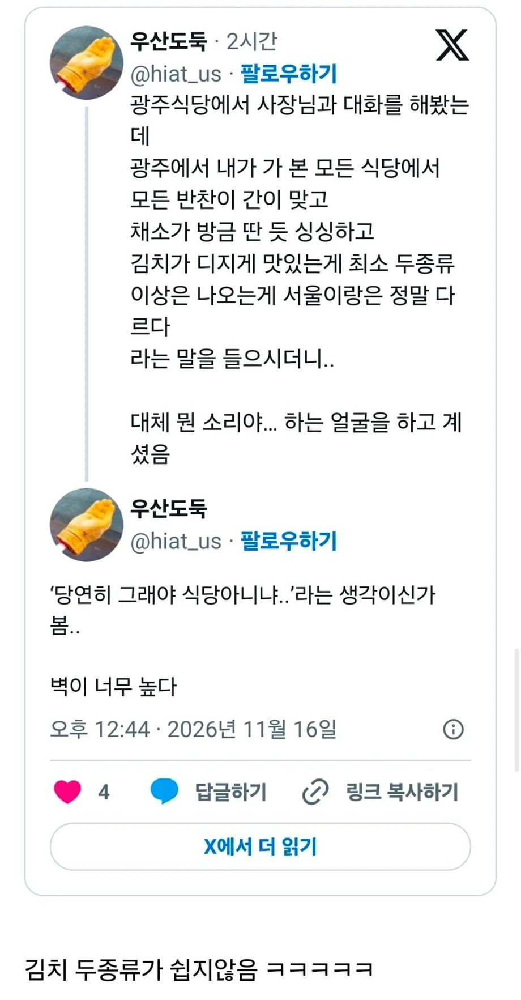

재야의 고수가 너무 많아서 썩은물 쌉고수가 아니면 평타 취급당함

재야의 고수가 너무 많아서 썩은물 쌉고수가 아니면 평타 취급당함
어느나라든 자국 음식은 요식업에서 저평가될수밖에 없는듯
집에서 먹는 것들은 식당에서 좀만 비싸면 바로 그돈씨 소리나와서
일단 우리엄마보단 잘해야됨 ㅋㅋ
한식 특: 생각보다 손 많이 가며, 반찬 가짓수도 구색맞춰야 하는데, 맛의 퀄리티는 최소 집밥정도 되거나 그 이상이어야하지만 가격을 올리긴 쉽지않음
ㄹㅇ 지금 있는 가게들
그냥 그것만 할줄 아시니까
본인 인건비 원가 생각 안하고 식당 유지만 되면 그냥 일하시는 분들이 많음
한식이 대박나면 양식 일식 이런거보다 곱절로 돈버는데 그게아니면 같은보상대비 노동력도 곱절로듬..
당연하게도 채점기준이 더 깐깐해질 수 밖에 없지.
다 아는거고 이미 다 맛본건데. 하다 못해 급식과도 비교될거고
전라도식당은 ㄹㅇ 고수들만 살아남을 수 밖에 없는게 가정주부들도 다 한따까리함
돈주고 먹는건 그거보다 맛있어야돼..
아니면 내가 만든 것보다 못하는데 이걸 이돈주고 사먹어? 바로 소문남
다 거기서 거긴데 오바 개 심함 진짜 ㅋㅋㅋ
한식이 어려운 이유 중에 또 한가지 이유가 경쟁자가 어머니, 할머니이기 때문이라는 얘기도 있지.
??? : "아 미치겠네, 농약도 안쓴 겁니까? 방금 따 갖고..."
다들 백반 많이 먹어둬 이제 10년 지나면 전국 한식집 태반이 문닫거나 지금 중국집꼴 난다
반찬 2개 주면 욕나오는게 한식이라서 더 어렵다
임대료 부담이 좀 더 적어서 재료비에 더 쓴대나